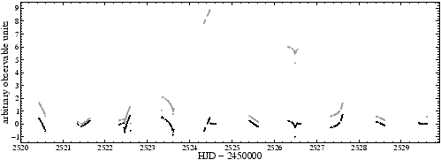

The keyword sim:zeromean may be used to adjust the mean value of the time series (or a subset) to zero. It is given with two floating-point parameters,
Example. In the sample project sim-zeromean, SIGSPEC models the same time series as in the project sim-poly (p. ), according to the first part of the file sim-zeromean.ini:
), according to the first part of the file sim-zeromean.ini:

sim:poly 2520.215 2521.088 4.298 2520.626 0.581
sim:poly 2521.088 2521.679 2.932 2521.443 1.195
sim:poly 2521.679 2522.442 1.092 2522.067 1.063
sim:poly 2522.442 2522.595 5.372 2522.466 0.676
sim:poly 2522.595 2523.351 2.495 2522.682 2.042
sim:poly 2523.351 2523.924 2.839 2523.607 0.221
sim:poly 2523.924 2524.478 8.357 2525.412 -0.899
sim:poly 2524.478 2525.399 2.304 2524.576 1.432
sim:poly 2525.399 2526.107 2.573 2525.721 1.205
sim:poly 2526.107 2526.550 6.350 2526.493 0.031
sim:poly 2526.550 2526.847 4.192 2526.589 2.893
sim:poly 2526.847 2527.616 0.345 2527.652 -0.472
sim:poly 2527.616 2528.264 3.583 2527.783 0.725
sim:poly 2528.264 2528.777 1.246 2528.704 0.610
sim:poly 2528.777 2529.606 3.534 2529.535 1.752
sim:poly 2529.606 2530.242 9.002 2529.694 1.119
This block of sim:poly keywords is followed by a corresponding block of sim:zeromean keywords:
sim:zeromean 2520.215 2521.088
sim:zeromean 2521.088 2521.679
sim:zeromean 2521.679 2522.442
sim:zeromean 2522.442 2522.595
sim:zeromean 2522.595 2523.351
sim:zeromean 2523.351 2523.924
sim:zeromean 2523.924 2524.478
sim:zeromean 2524.478 2525.399
sim:zeromean 2525.399 2526.107
sim:zeromean 2526.107 2526.550
sim:zeromean 2526.550 2526.847
sim:zeromean 2526.847 2527.616
sim:zeromean 2527.616 2528.264
sim:zeromean 2528.264 2528.777
sim:zeromean 2528.777 2529.606
sim:zeromean 2529.606 2530.242
This block is responsible for shifting the mean observable to zero for each synthesized power function.
Fig.36 compares the corresponding light curve with the light curve generated in the project sim-poly. (See also Fig.29) The 16 significant signal components detected by SIGSPEC are of minor interest and not discussed here.


Next: Signal-to-Noise Ratio and Lomb-Scargle
Up: The Built-in Simulator
Previous: Random steps
Contents
Piet Reegen
2009-09-23